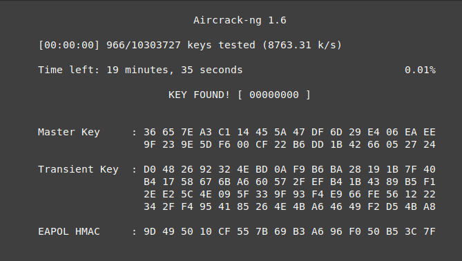

Tactic: Initial Access
Technique: WiFi Cracking
Nearly all WiFi networks today use WPA2 security. An adversary can capture a handshake between a client and an access point and use this information to brute force the password. The adversary does need to be in range of the WiFi network for this. This cracking is done offline so the speed depends on the processing power of the machine used. This means a motivated adversary can speed up this process as desired.
Technique in practice
During a pentest of the Unitree GO1 the WiFi handshake was capture and brute forced revealing password 00000000. 
Mitigations
The easiest and most effective mitigation is to use a strong password. Using brute force the password could always be cracked but at some point the time it would take makes it infeasible, even on very powerfull hardware. Another option would be to use WPA3, this makes the cracking process substantially more difficult but does not excuse a weak password.
Detections
Detecting WiFi cracking is basically impossible because the capture can be done without interaction with the network and the cracking is done offline. Sometimes an adversary may send a deauthentication packet to a client to speed up the process of a handshake capture. Trying to detect this is impractical because just setting a stronger password is easier and more effective.
Ethical Considerations
When this technique is used for a robot that is connected to a network that is public or not from the same owner as the robot, one should consider what to do when the password for this network is cracked. Depending on the situation, it might be ethically to inform the owner of the network that it's password should be changed after achieving ones goal. One should also take into consideration that the method of cracking itself, can cause disruptions on said network. Especially when using a brute force technique, the targeted network device could become slow or crash. This could cause damages to services or devices that are also part of the network.
Documented incidents with autonomous robots
No incidents known at the time of writing.
Documented incidents in other domains
[2022] SIMATIC heap-based buffer overflow